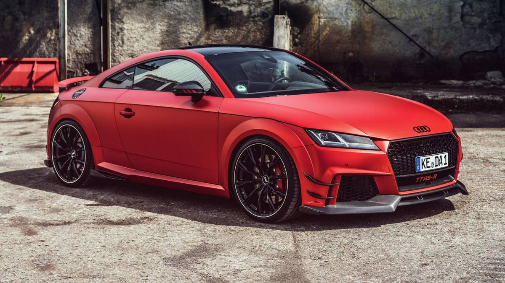

Модификована верзија аутомобила
- Број коњских снага: 800 КС
- Убрзање од 0 дo 100 км/ч: 2.55 секунде
- Убрзање од 100 до 200 км/ч: 3.94 секунде
- Пренос: 4х4
- Мотор: 2.5 литара, 5 цилиндара, ковани
- Клипови: ковани
- Турбо: Турбо Енџинерс ТТЕ777
- Мењач: Унитроник, Стејџ 3
- Издувни систем: Милтек
- Усис: Унитроник, 100 мм, карбонски
- Пумпа за гориво: Ироз Моторспорт, кастом израда
- Постављен већи интекулер
- Вагнеров довнпајп
- Сензор концентрације етанола
- Постављена Стејџ 3 мапа
